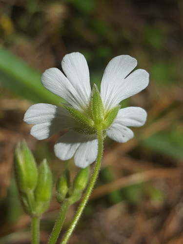
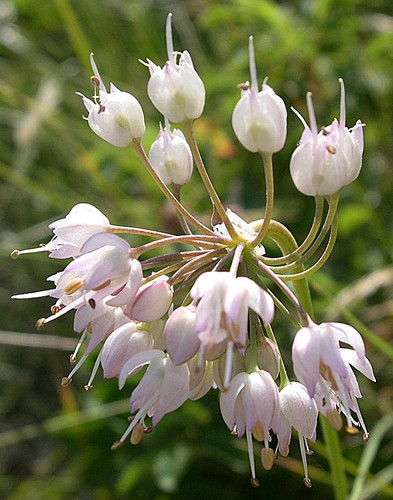
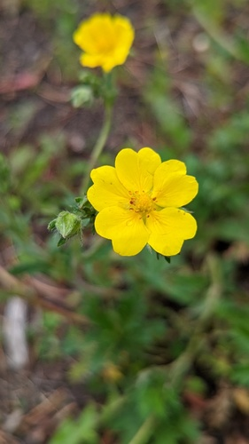
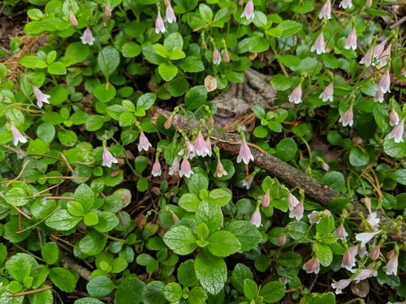
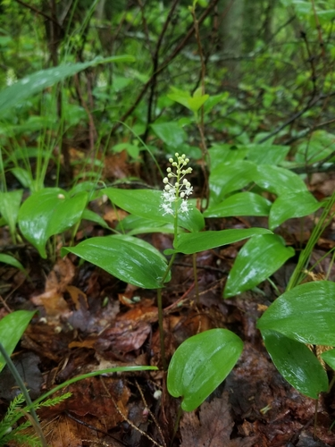
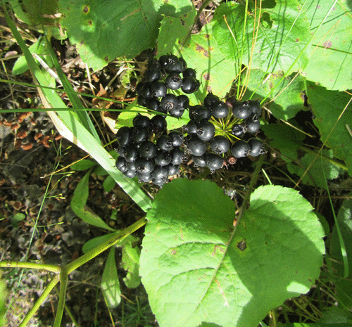
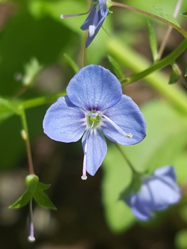
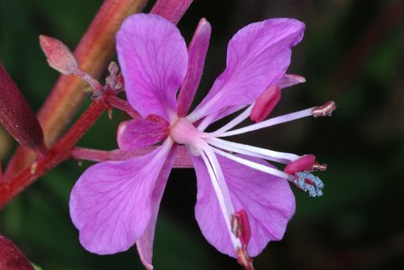

Lasioglossum cressonii
Lasioglossum cressonii native bee
Sweat bees. Abundant and diverse here.
19 documented plant relationships.
gathers pollen at
 Boreal YarrowAchillea borealis
Boreal YarrowAchillea borealis
Field ChickweedCerastium arvense
Nodding OnionAllium cernuum Alan Rockefeller, some rights reserved (CC BY), uploaded by Alan Rockefeller") Red ColumbineAquilegia formosa
Red ColumbineAquilegia formosa
Slender Cinquefoil (Graceful Cinquefoil)Potentilla gracilis Gavin Slater, some rights reserved (CC BY), uploaded by Gavin Slater") ThimbleberryRubus parviflorus
ThimbleberryRubus parviflorus
TwinflowerLinnaea borealis Kevin Krebs, some rights reserved (CC BY), uploaded by Kevin Krebs") Water SmartweedPersicaria amphibia
Water SmartweedPersicaria amphibia
Wild Lily-of-the-valleyMaianthemum canadense
Wild SarsaparillaAralia nudicaulissips nectar at

American BrooklimeVeronica americanaBoreal YarrowAchillea borealis Douglas Goldman, some rights reserved (CC BY-SA), uploaded by Douglas Goldman") ChokecherryPrunus virginiana
ChokecherryPrunus virginiana
FireweedChamaenerion angustifolium Tom Norton, some rights reserved (CC BY), uploaded by Tom Norton") Pearly EverlastingAnaphalis margaritaceaSlender Cinquefoil (Graceful Cinquefoil)Potentilla gracilis
Pearly EverlastingAnaphalis margaritaceaSlender Cinquefoil (Graceful Cinquefoil)Potentilla gracilis Sticky Purple GeraniumGeranium viscosissimum
Sticky Purple GeraniumGeranium viscosissimum Nick Block, some rights reserved (CC BY), uploaded by Nick Block") Western Blue IrisIris missouriensis
Western Blue IrisIris missouriensis tzeducation, some rights reserved (CC BY), uploaded by tzeducation") Wild BergamotMonarda fistulosa
Wild BergamotMonarda fistulosa